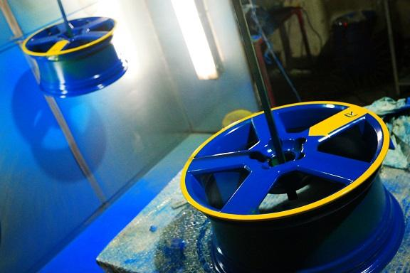
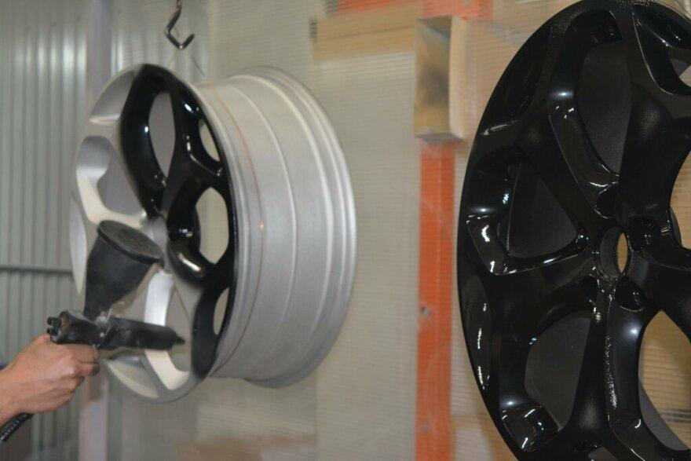
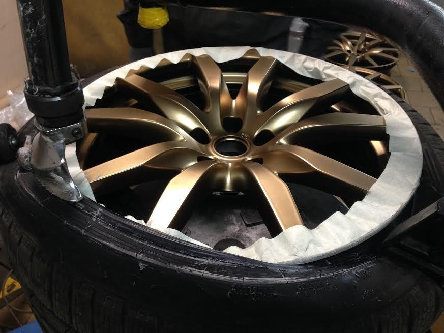
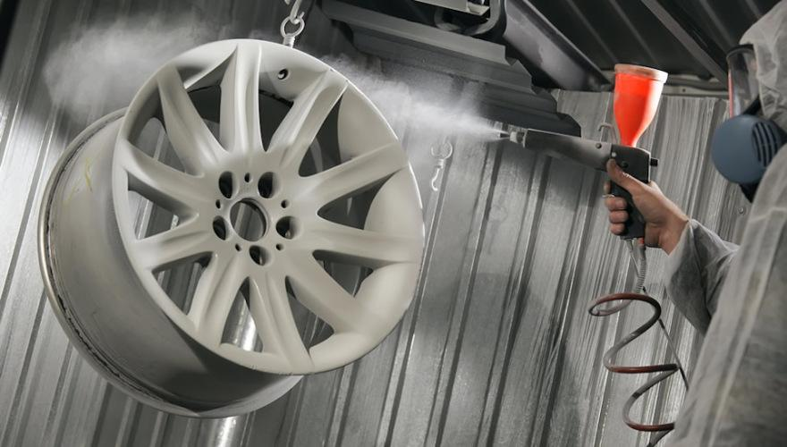
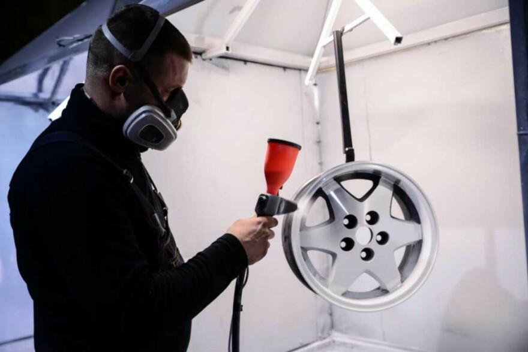

Порошковая покраска дисков пользуется большой популярностью среди автовладельцев. Это легко объяснимо. Покрытые краской диски приобретают массу положительных качеств:
- хорошая адгезия металла, покрытия;
- повышенная прочность, долговечность;
- ровная поверхность, чистый цвет.
Порошковая краска ложится на диск ровно, без потеков. Состав подходит дискам, независимо от материала, типа.
В мастерской «АвтосервисПрофи» окрашивают диски:
- кованные;
- литье;
- штамповка;
- легкосплав.
Цены на покраску
Цены на покраску дисков в «АвтосервисПрофи»
| Диск | Цена за матовую поверхность | Цена за глянцевую поверхность |
| R-13 | от 5 500 руб | от 6 000 руб |
| R-14 | от 6 000 руб | от 6 600 руб |
| R-15 | от 7 000 руб | от 8 000 руб |
| R-16 | от 7 300 руб | от 8 500 руб |
| R-17 | от 8 600 руб | от 10 000 руб |
| R-18 | от 10 000 руб | от 16 000 руб |
| R-19 | от 11 000 руб | от 12 700 руб |
| R-20 | от 12 000 руб | от 13 800 руб |
| R-21 | от 13 400 руб | от 15 400 руб |
| R-22 | от 14 900 руб | от 17 200 руб |
| R-23 | от 15 600 руб | от 18 500 руб |
Сколько стоит покраска, зависит от нескольких моментов, влияющих на цену. Имеет значение:
- размеры диска;
- тип;
- выбор покрытия (матовость, глянец);
- физическое состояние дисков.
На сайте компании указаны примерные цены. Окончательную стоимость специалист назовет, осмотрев колеса и уточнив детали покраски.
Говоря о преимуществах окрашивания дисков, нужно отметить высокую устойчивость к нагрузкам, перепадам температур. Диски приобретают антикоррозийные и электроизоляционные качества, не требуют специального ухода.
Сама краска экономичная, дает минимальные отходы, быстро сохнет. Важный плюс порошковой краски – экологичность.
Процесс покраски в нашем сервисе





Для процедуры покраски владельцу автомобиля необходимо доставить колеса в автосервис, оставить на пару суток.
Мастера автосервиса делают покраску так:
- Делают первичный осмотр. Обнаружив дефекты, проводят реставрацию.
- Поверхность зачищают с помощью пескоструя, хорошо очищающего покрытие от коррозийных следов, остатков краски. Основа для окрашивания готова.
- Следующий этап – обезжиривание спецсоставами. Необходимо удалить жирные, масляные пятна, чтобы свежий слой был качественным.
- Поверхность окрашивают.
- Обновленный диск устанавливают в печь для затвердевания. Итог работы — устойчивое к механическим, химическим внешним воздействиям покрытие.
- Диски проверяют на качество покрытия, возвращают заказчику.
Профессиональная покраска дисков в «АвтосервисПрофи»
Приезжайте за покраской дисков автомобиля в «АвтосервисПрофи». За 15 лет работы наши мастера привели в порядок сотни автомобилей разных классов и производителей. Технология отработана до мелочей.
Доступные цены, качественный материалы, профессиональное оборудование – главные составляющие хорошей работы.
Обращайтесь. Качество и оперативность гарантируем.